DuckDB · 核心原理图谱
嵌入式分析型数据库:进程内单文件 OLAP,列式向量化执行 + morsel 并行,MVCC 事务,零依赖嵌入宿主。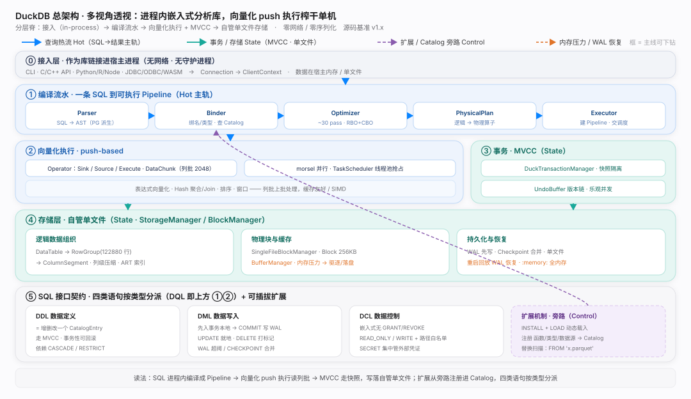
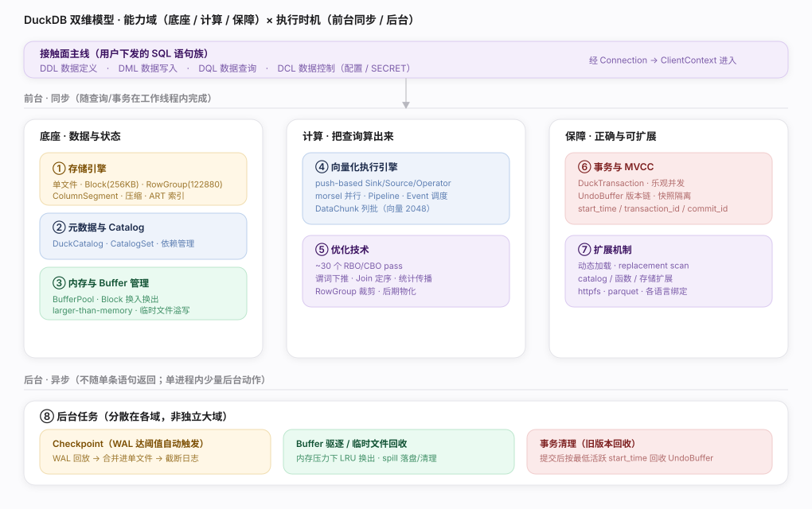
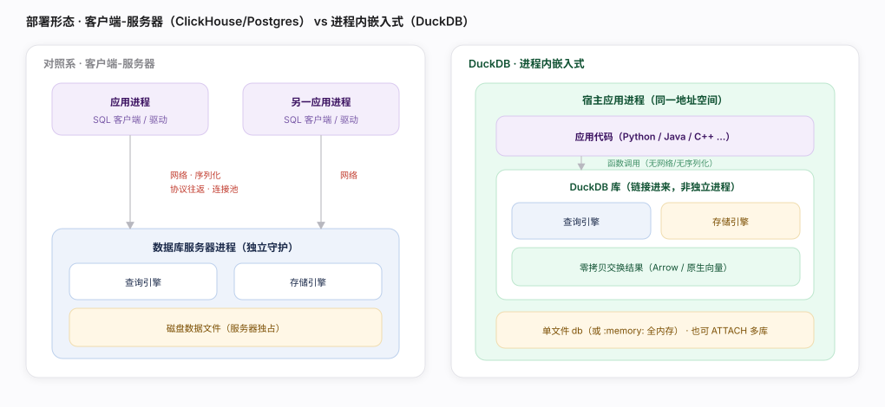
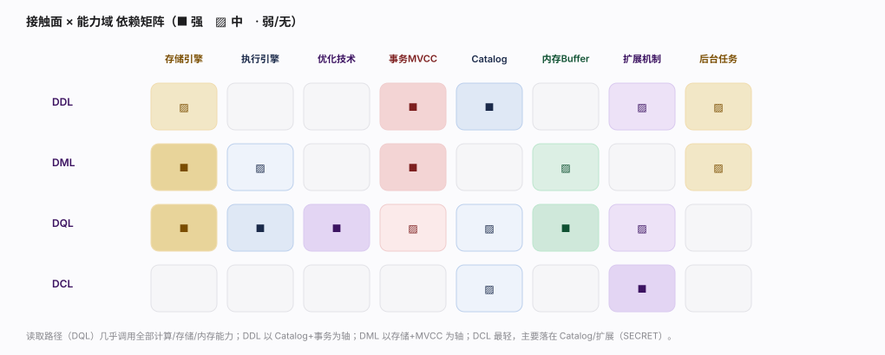
threads/SET threads 影响的是单机线程池规模，扩不了单机内存与核数的天花板；超内存靠溢写而非扩容。CHECKPOINT。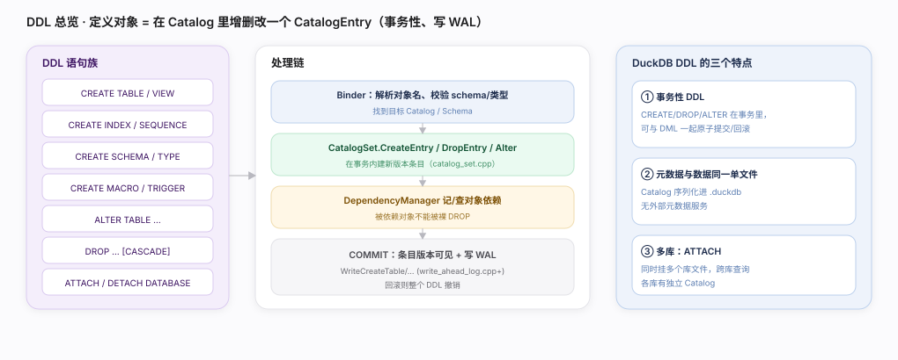
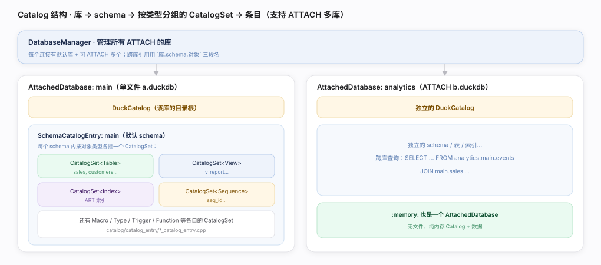
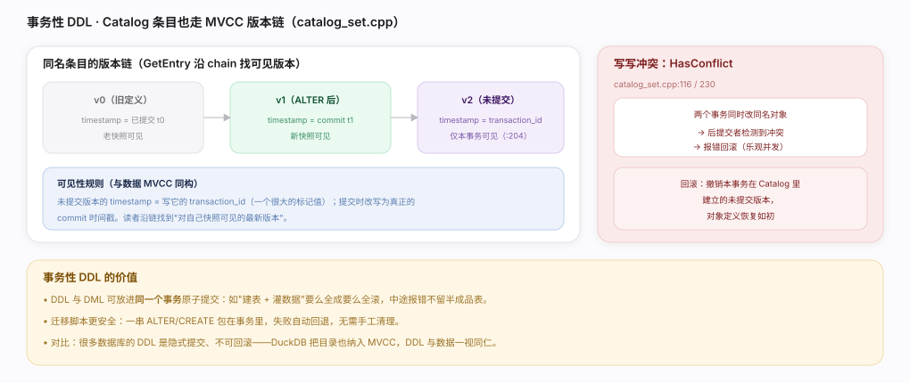
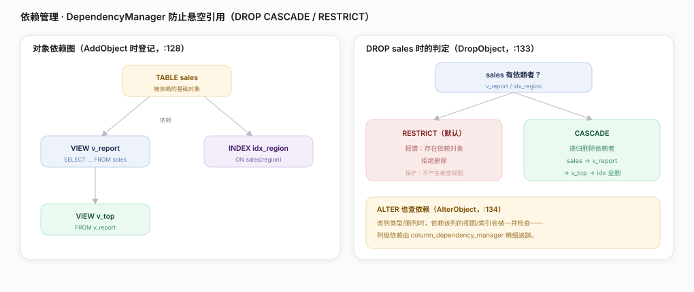
![ALTER 路径]()
Binder 定位库/schema → CatalogSet 建/删/改版本条目 → DependencyManager 校验依赖 → 事务提交 + 写 WAL。它以元数据与 Catalog为主轴，深度依赖事务与 MVCC（Catalog 条目也走版本链，DDL 可回滚），落盘依赖 WAL + Checkpoint（后台）。核实基准：主线源码 duckdb/src。CHECKPOINT：DDL 变更也进 WAL，密集建表后可显式 checkpoint 让 Catalog 落定。ADD_COLUMN；避免频繁 ALTER_COLUMN_TYPE/REMOVE_COLUMN（重写代价高）。ATTACH … (READ_ONLY)：只读挂载外部库，避免误写。BEGIN; …DDL…; COMMIT;），失败自动回滚。ALTER_COLUMN_TYPE 会重写列数据，大表上很慢，应在建表期定好类型。| 类别 | 条目类型 | 说明 |
|---|---|---|
| 数据对象 | Table / View / Index / Sequence | 表、视图、（ART）索引、序列 |
| 命名空间 | Schema / Type | schema、用户自定义类型 |
| 可调用 | ScalarFunction / TableFunction / AggregateFunction / Macro | 内建与扩展函数、SQL 宏 |
| 其他 | Trigger / PragmaFunction / CopyFunction | 触发器、PRAGMA、COPY 格式 |
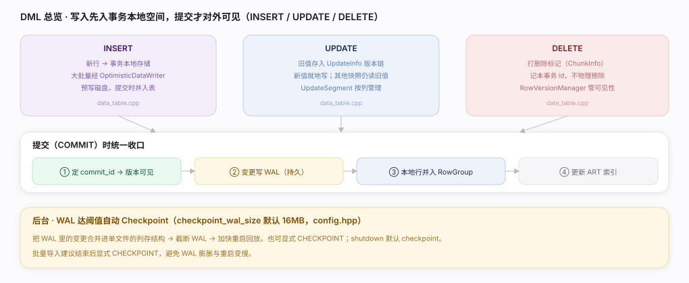
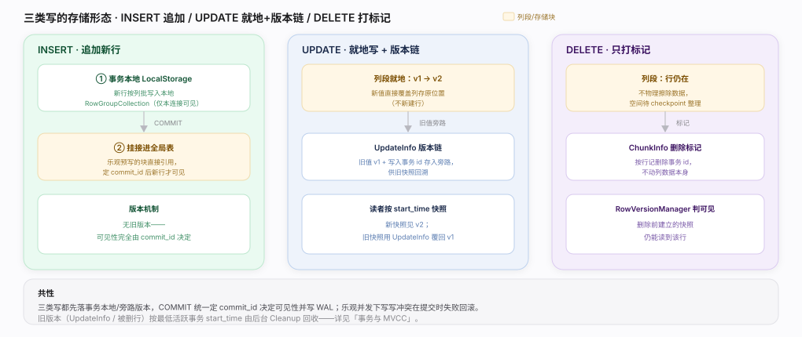
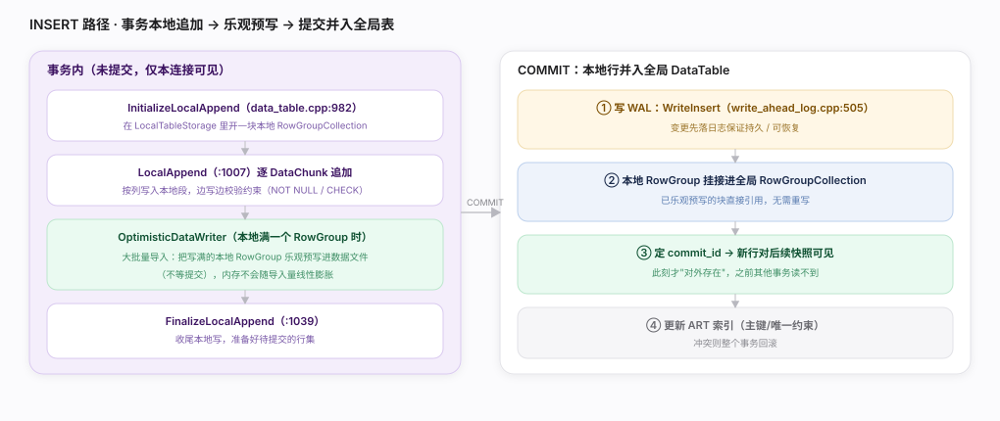
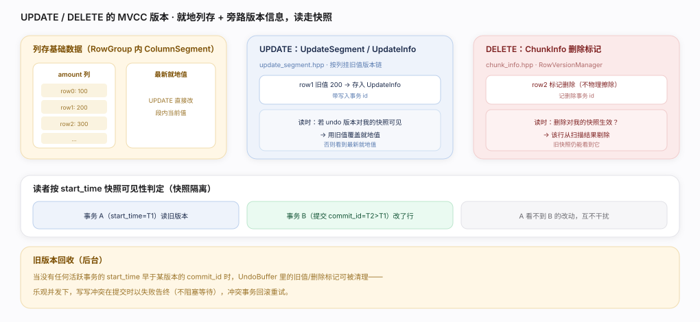
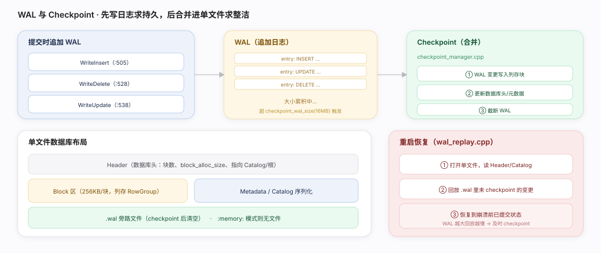
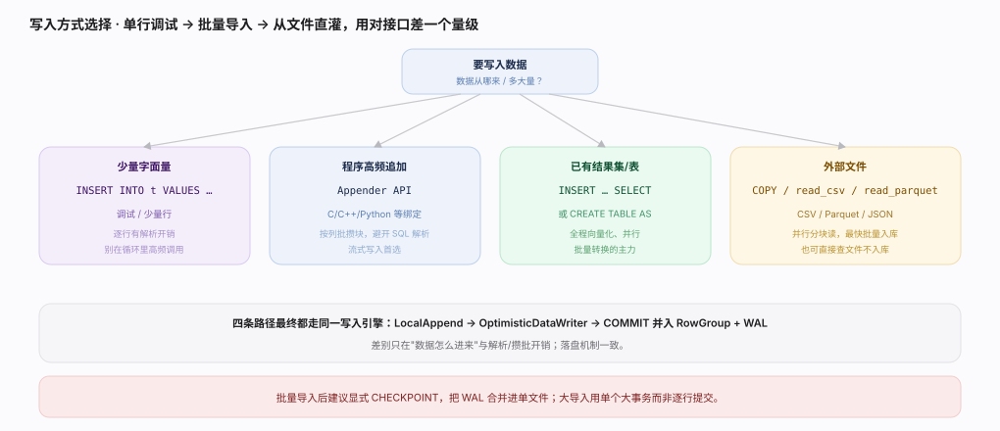
事务本地存储 → COMMIT 并入全局表 → WAL 持久 → 后台 Checkpoint。它以存储引擎（RowGroup 追加/就地列存）与事务与 MVCC（UndoBuffer 版本链、快照可见性）为双轴，写入落盘靠 WAL + Checkpoint（后台任务），约束校验依赖 元数据与 Catalog（主键/唯一走 ART 索引）。核实基准：主线源码 duckdb/src。checkpoint_wal_size：自动 checkpoint 的 WAL 阈值（默认 16MB）；批量导入可临时调大减少 checkpoint 频次。CHECKPOINT：显式合并 WAL 进单文件——大批量导入后建议手动执行。PRAGMA / SET threads：导入解析（如 CSV）也可并行，受线程池规模影响。INSERT … VALUES 单行：每条都过 SQL 解析，慢；改用 Appender 或攒批 INSERT … SELECT。CHECKPOINT。COMMIT 的写对其他事务不可见，与 ClickHouse 的"Part 一出现即可见"不同。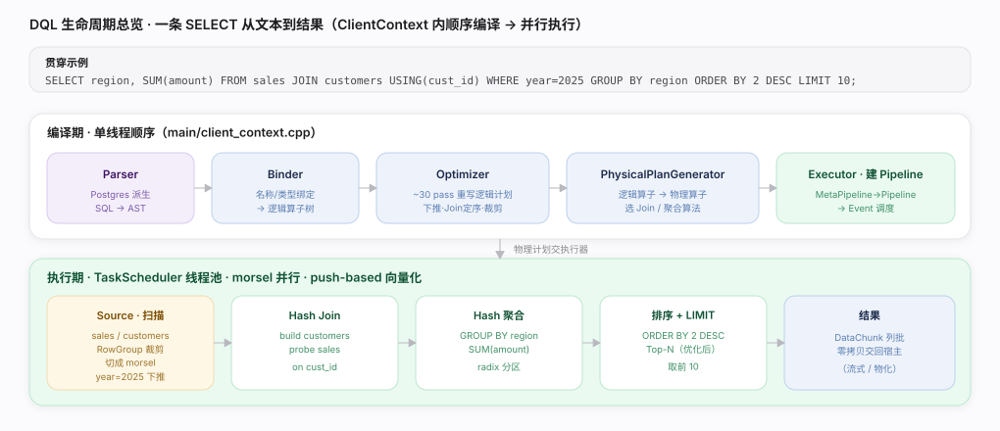
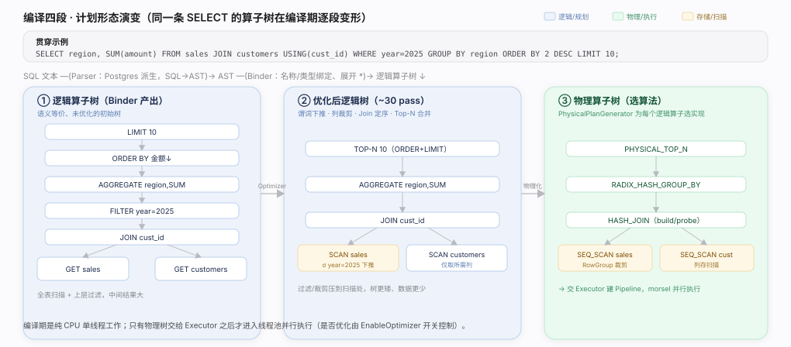
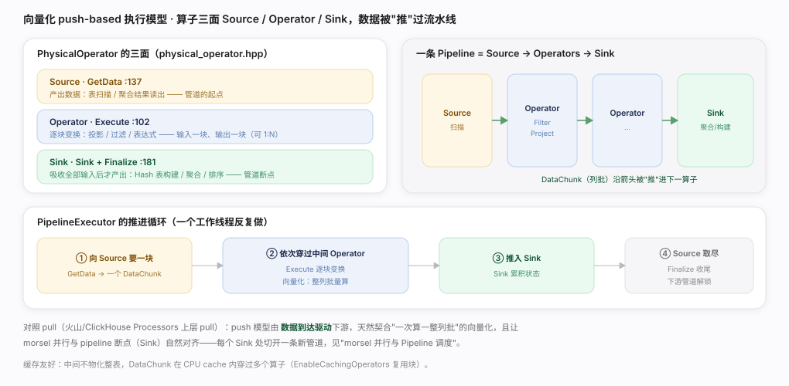
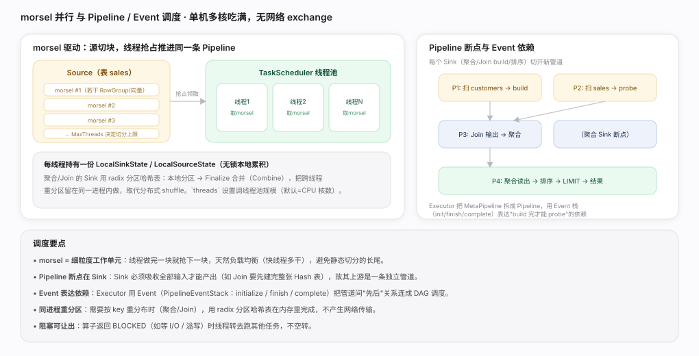
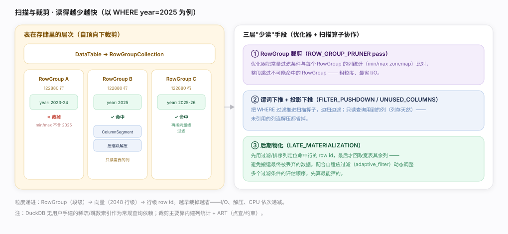
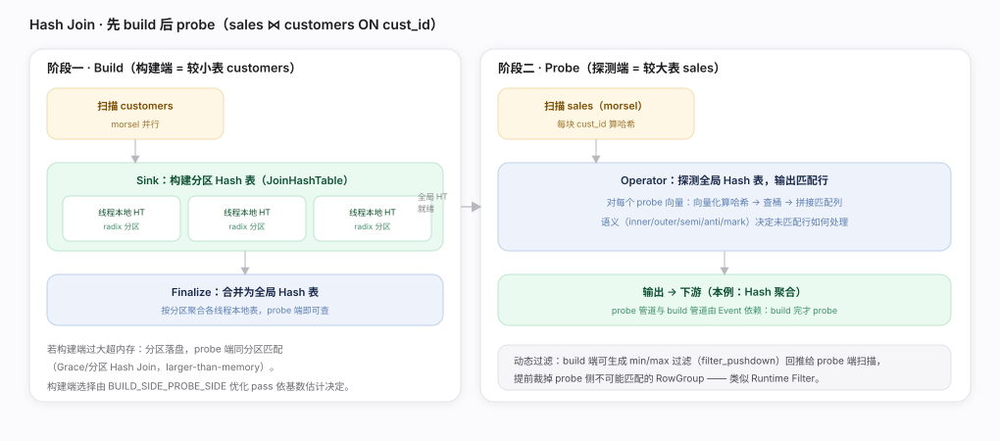
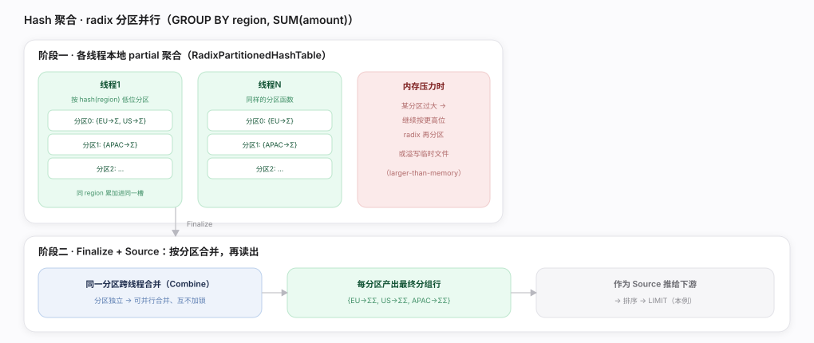
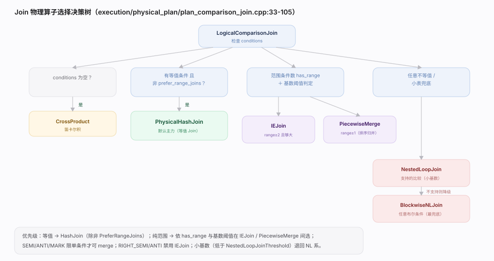
ClientContext 内 Parser → Binder → Optimizer → PhysicalPlanGenerator → Executor（main/client_context.cpp:478-539），再由 push-based 向量化流水线在 TaskScheduler 线程池上 morsel 并行执行。它是依赖面最广的一条线：强依赖向量化执行引擎、优化技术、存储引擎（读取路径）与内存/Buffer 管理，弱依赖事务与 MVCC（快照读）。核实基准：主线源码 duckdb/src。threads / SET threads：并行线程池规模，默认取 CPU 核数；受限环境可调小。memory_limit：查询可用内存上限，触发溢写的阈值来源。enable_optimizer：关掉可对比"优化前后"计划（诊断用），生产勿关。prefer_range_joins：偏好范围 Join 算子（影响上面的决策树分支）。EXPLAIN / EXPLAIN ANALYZE：看逻辑/物理计划与各算子实际耗时、行数——调优第一手段。threads 需按机器实测。EXPLAIN 确认较小表在 build 端，必要时更新统计（ANALYZE）。| 类别 | 代表 pass | 作用 |
|---|---|---|
| 表达式重写 | EXPRESSION_REWRITER、COMMON_SUBEXPRESSIONS | 常量折叠、化简、公共子表达式提取 |
| 下推 | FILTER_PUSHDOWN、LIMIT_PUSHDOWN、PARTIAL_AGGREGATE_PUSHDOWN | 把过滤/limit/部分聚合尽量下推近数据源 |
| Join | JOIN_ORDER、BUILD_SIDE_PROBE_SIDE、JOIN_ELIMINATION | 基于基数的 Join 重排、构建端选择、消除无用 Join |
| 裁剪 | ROW_GROUP_PRUNER、UNUSED_COLUMNS、COLUMN_LIFETIME | 段级裁剪、去未引用列、缩短列生命周期 |
| 物化/Top-N | LATE_MATERIALIZATION、TOP_N、SAMPLING_PUSHDOWN | 后期物化、ORDER BY+LIMIT 合成 Top-N |
| 统计 | STATISTICS_PROPAGATION | 沿计划传播列统计，喂给上面各 pass |
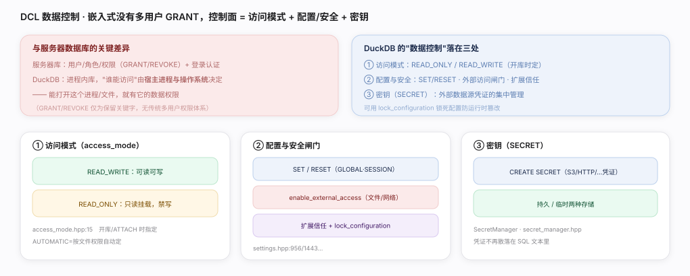
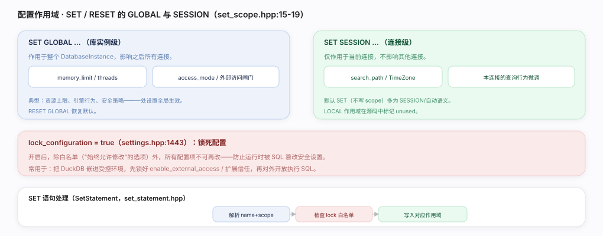
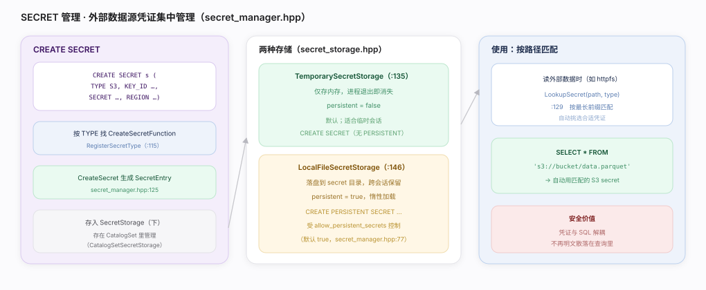
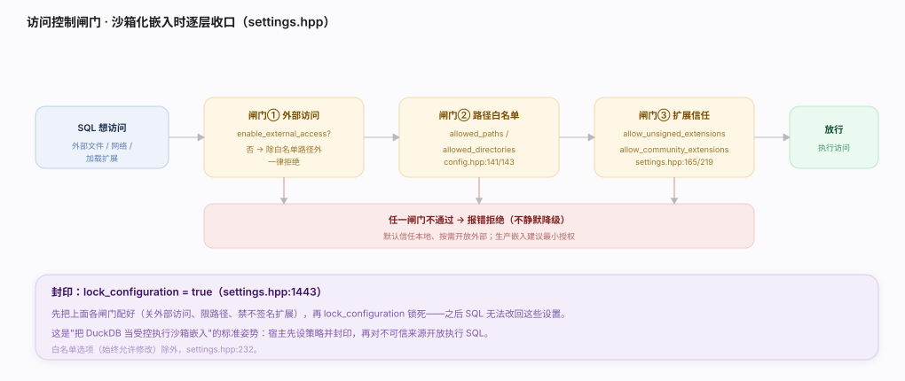
duckdb/src。它是依赖面最轻的一条主线（见全景依赖矩阵）。SET enable_external_access=false、限定 allowed_paths、禁不签名/社区扩展，再 SET lock_configuration=true 封印。CREATE SECRET 管凭证，避免在 SQL 里明文写 KEY/TOKEN。READ_ONLY 打开库，杜绝误写。memory_limit/threads），用 SESSION 调单连接行为。lock_configuration，顺序反了等于没锁。allowed_paths 白名单仍是放行例外——审计白名单内容。| 类别 | 设置 | 作用 | 锚点 |
|---|---|---|---|
| 访问模式 | access_mode | AUTOMATIC/READ_ONLY/READ_WRITE | access_mode.hpp:15 |
| 外部访问 | enable_external_access | 文件/网络访问总闸 | settings.hpp:956 |
| 路径白名单 | allowed_paths / allowed_directories | 例外放行的路径 | config.hpp:141/143 |
| 扩展信任 | allow_unsigned_extensions / allow_community_extensions | 允许加载哪些扩展 | settings.hpp:219/165 |
| 配置封印 | lock_configuration | 锁死配置防篡改 | settings.hpp:1443 |
| 密钥持久 | allow_persistent_secrets | 是否允许落盘 SECRET | secret_manager.hpp:77 |
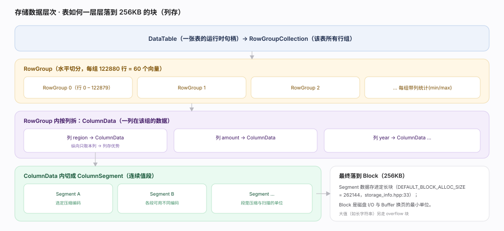
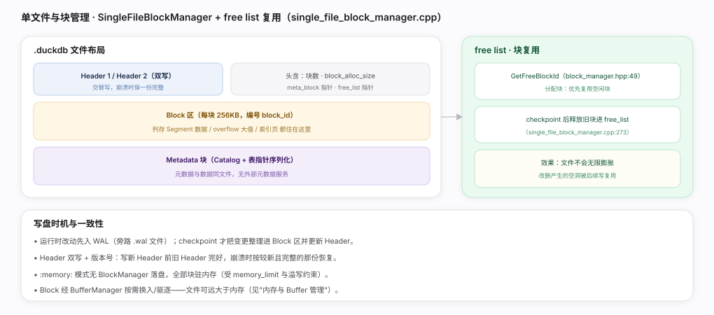
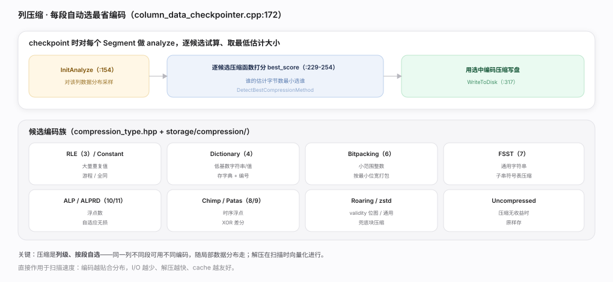
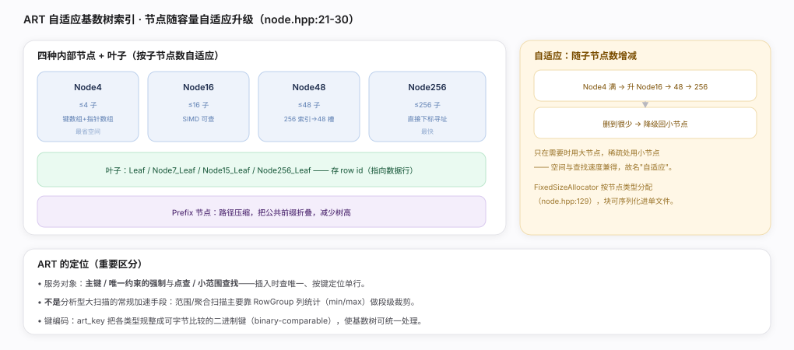
duckdb/src。CHECKPOINT：触发压缩分析与块整理，让存储进入紧致状态。block_alloc_size（建库时）可调块大小，一般用默认 256KB。| 常量 | 值 | 含义 | 锚点 |
|---|---|---|---|
| STANDARD_VECTOR_SIZE | 2048 | 向量/DataChunk 宽度 | vector_size.hpp:16 |
| DEFAULT_ROW_GROUP_SIZE | 122880 | 每 RowGroup 行数（=60 向量） | storage_info.hpp:26 |
| DEFAULT_BLOCK_ALLOC_SIZE | 262144（256KB） | 块分配大小 | storage_info.hpp:33 |
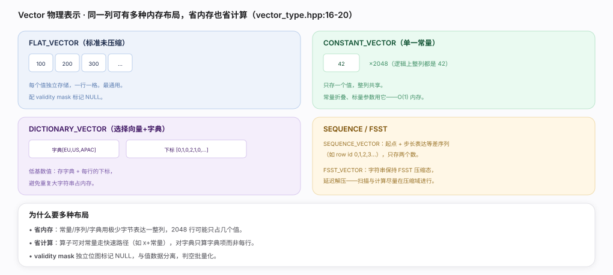
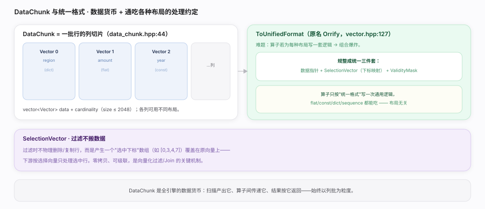
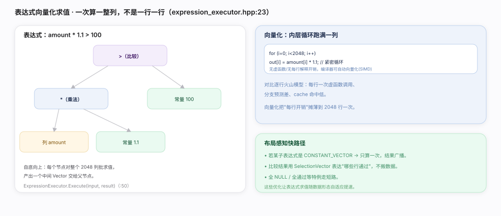
duckdb/src。threads：线程池规模（默认 CPU 核数），并行度上限。enable_caching_operators：算子间 DataChunk 复用（减少分配），一般开启。EXPLAIN ANALYZE 看各算子实际处理行数/耗时，定位向量化未生效或数据倾斜。| 组件 | 职责 | 锚点 |
|---|---|---|
| PhysicalOperator | Source/Operator/Sink 三面接口 | physical_operator.hpp:102/137/181 |
| PipelineExecutor | 单线程推进一条 Pipeline，算子间传 DataChunk | parallel/pipeline_executor.cpp |
| Executor | 拆 MetaPipeline → Pipeline → Event 调度 | parallel/executor.cpp |
| TaskScheduler | 线程池，morsel 任务分发 | parallel/task_scheduler.cpp |
| ExpressionExecutor | 向量化表达式求值 | execution/expression_executor.cpp |
| JoinHashTable / RadixPartitionedHashTable | Join/聚合的分区哈希表 | execution/join_hashtable.cpp 等 |
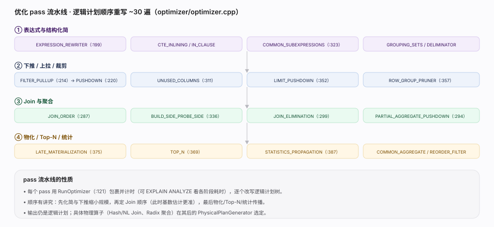
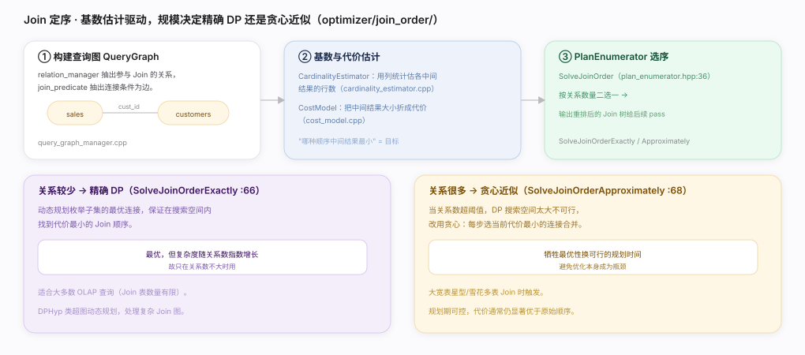
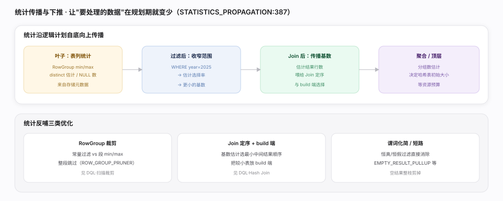
ClientContext 编译链的中段（main/client_context.cpp:526）对逻辑计划顺序跑 ~30 个 pass，用统计与代价把"要处理的数据"在规划期就变少，再把优化后的逻辑计划交给 PhysicalPlanGenerator。为 DQL 定"怎么算最省"，与存储引擎（列统计）、执行引擎（物理算子）协作。核实基准：主线源码 duckdb/src。EXPLAIN / EXPLAIN ANALYZE：看优化后计划与各算子实际行数/耗时——判断估计是否离谱。ANALYZE / 保证数据有序：让列统计更准，Join 定序与裁剪才有效。enable_optimizer：诊断时可临时关，看优化前后差异；生产勿关。prefer_range_joins 等开关影响特定物理算子选择（见 DQL·Join 选择）。| 组 | pass | 作用 |
|---|---|---|
| 化简 | EXPRESSION_REWRITER / COMMON_SUBEXPRESSIONS | 常量折叠、化简、公共子表达式提取 |
| 下推 | FILTER_PUSHDOWN / LIMIT_PUSHDOWN / PARTIAL_AGGREGATE_PUSHDOWN | 过滤/limit/部分聚合下推近数据源 |
| 裁剪 | UNUSED_COLUMNS / COLUMN_LIFETIME / ROW_GROUP_PRUNER | 去未引用列、缩列生命周期、段级裁剪 |
| Join | JOIN_ORDER / BUILD_SIDE_PROBE_SIDE / JOIN_ELIMINATION | 重排、构建端选择、消除无用 Join |
| 物化 | LATE_MATERIALIZATION / TOP_N | 后期物化、ORDER BY+LIMIT→Top-N |
| 统计 | STATISTICS_PROPAGATION | 传播列统计喂给上面各 pass |
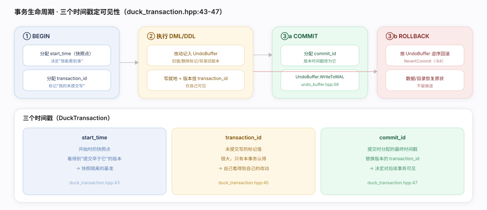
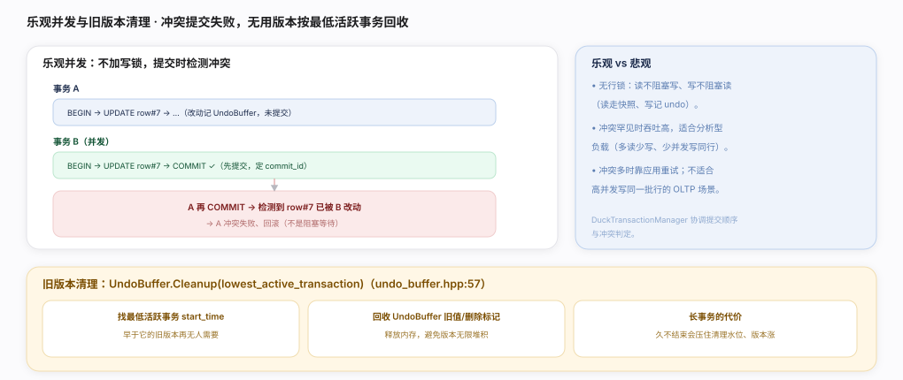
duckdb/src。lowest_active_transaction，旧版本清理不了，内存与文件承压。| 组件 | 职责 | 锚点 |
|---|---|---|
| DuckTransaction | 单个事务的时间戳与状态 | transaction/duck_transaction.cpp |
| DuckTransactionManager | 分配时间戳、协调提交顺序与冲突判定 | transaction/duck_transaction_manager.cpp |
| UndoBuffer | 记录可回滚的旧版本，提交写 WAL、回滚复原、清理回收 | transaction/undo_buffer.cpp |
| CommitState / RollbackState / CleanupState | 提交/回滚/清理各阶段的执行 | transaction/commit_state.cpp 等 |
| MetaTransaction | 跨多个 ATTACH 库的事务协调 | transaction/meta_transaction.cpp |
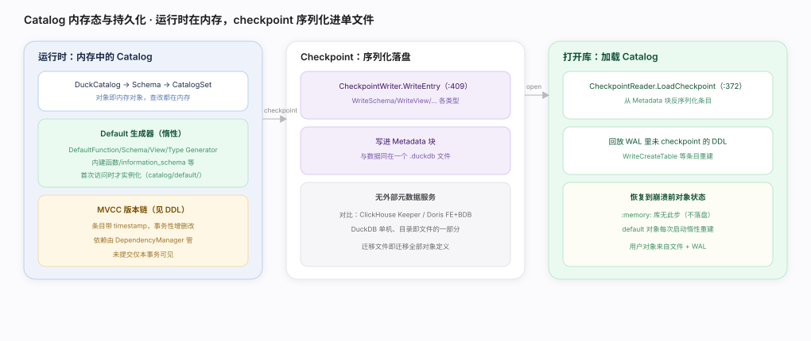
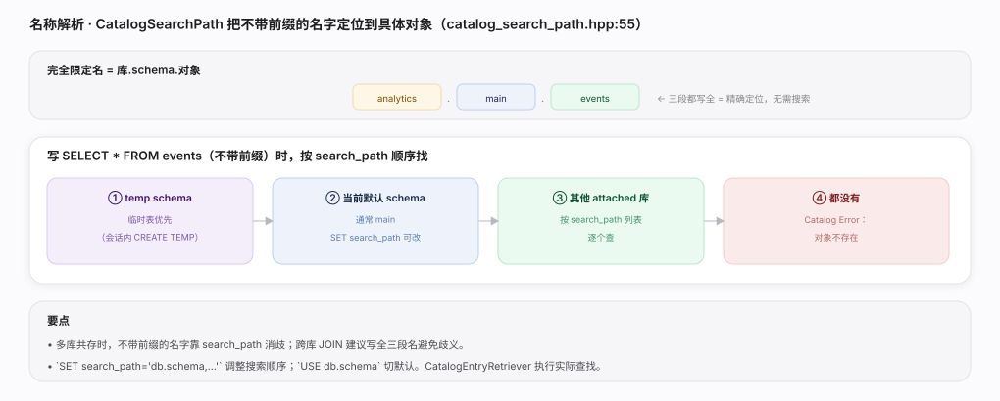
duckdb/src。SET search_path / USE：多库/多 schema 时明确搜索范围，减少歧义与查找开销。db.schema.tbl），既清晰又避免 search_path 依赖。CHECKPOINT：把目录变更从 WAL 合进 Metadata 块，加快下次打开。CREATE TEMP：仅会话可见、不落盘，适合中间结果。| 组件 | 职责 | 锚点 |
|---|---|---|
| DatabaseManager | 管理所有 ATTACH 的库 | main/database_manager.cpp |
| DuckCatalog / CatalogSet | 每库目录根 / 按类型的条目集合（MVCC） | catalog/ |
| DependencyManager | 对象依赖图（CASCADE/RESTRICT） | catalog/dependency_manager.hpp |
| CatalogSearchPath | 不带前缀名的解析顺序 | catalog/catalog_search_path.cpp |
| Default*Generator | 内建函数/视图/schema 惰性生成 | catalog/default/ |
| CheckpointWriter/Reader | 目录序列化/反序列化 | storage/checkpoint_manager.cpp |
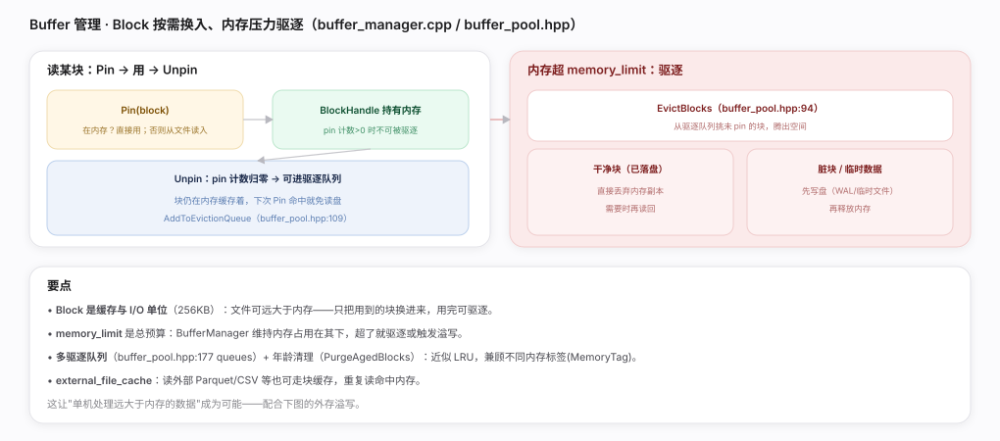
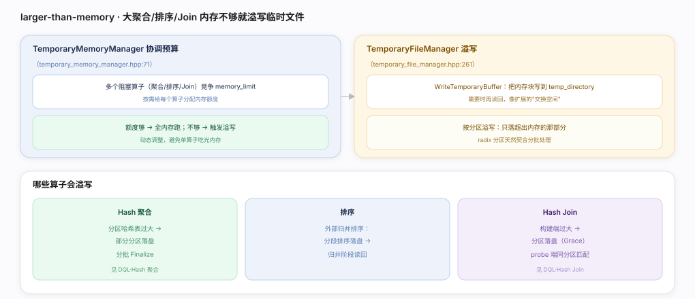
duckdb/src。memory_limit：总内存预算，决定何时驱逐/溢写；据机器内存与并发查询设定。temp_directory：溢写落盘位置，放在快盘（SSD）上，容量要够大查询用。threads：并行度高会同时占更多内存（每线程本地状态），与 memory_limit 联动权衡。| 组件 | 职责 | 锚点 |
|---|---|---|
| StandardBufferManager | Pin/Unpin、分配、协调驱逐 | storage/standard_buffer_manager.cpp |
| BufferPool | 内存预算、驱逐队列、EvictBlocks | storage/buffer/buffer_pool.hpp |
| TemporaryMemoryManager | 阻塞算子间内存额度协调 | storage/temporary_memory_manager.hpp:71 |
| TemporaryFileManager | 溢写块到临时目录 | storage/temporary_file_manager.hpp:261 |
| ExternalFileCache | 外部文件（Parquet/CSV）块缓存 | storage/external_file_cache/ |
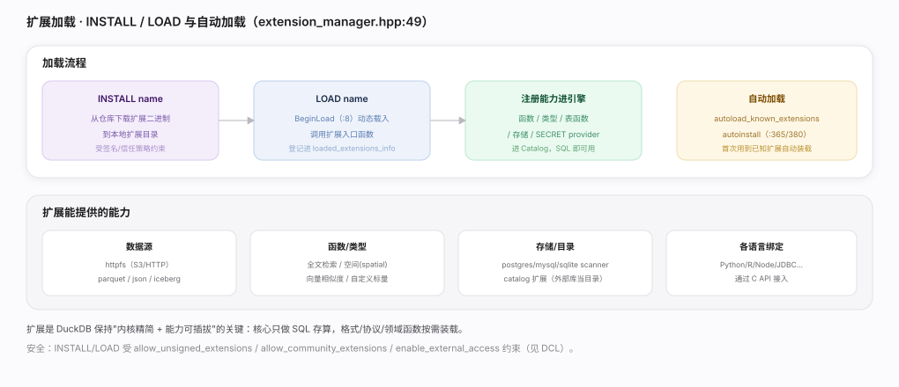
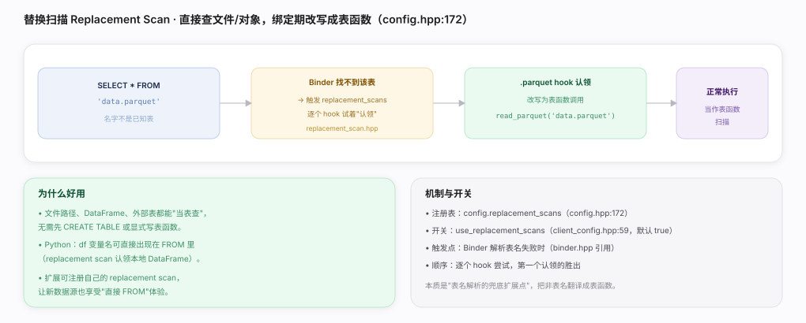
INSTALL/LOAD 与自动加载把扩展能力注册进 Catalog，替换扫描让"直接 FROM 文件/对象"成为可能。被 DQL/DML（外部数据源）与 DCL（SECRET provider、扩展信任）依赖。核实基准：主线源码 duckdb/src。autoload_known_extensions / autoinstall_known_extensions：便利但联网；受控环境按需关闭。allow_unsigned_extensions / allow_community_extensions：信任策略，生产嵌入应最小化（见 DCL）。use_replacement_scans：一般保持开启；需要严格表名语义时可关。INSTALL/LOAD，避免查询期首次自动装载的延迟。| 组件 | 职责 | 锚点 |
|---|---|---|
| ExtensionManager | 已加载扩展登记、BeginLoad | main/extension_manager.hpp:49 |
| ExtensionHelper | 安装/加载/信任校验 | main/extension_helper.hpp |
| ReplacementScan | 表名解析兜底改写 | function/replacement_scan.hpp |
| C API（duckdb.h） | 扩展与语言绑定的稳定接口 | include/duckdb.h |
| SecretManager | 扩展注册 SECRET provider（见 DCL） | main/secret/secret_manager.hpp |
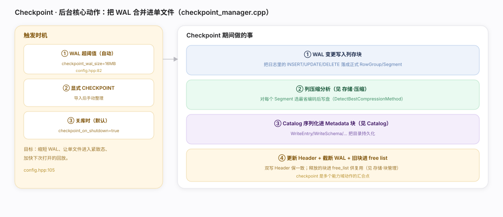
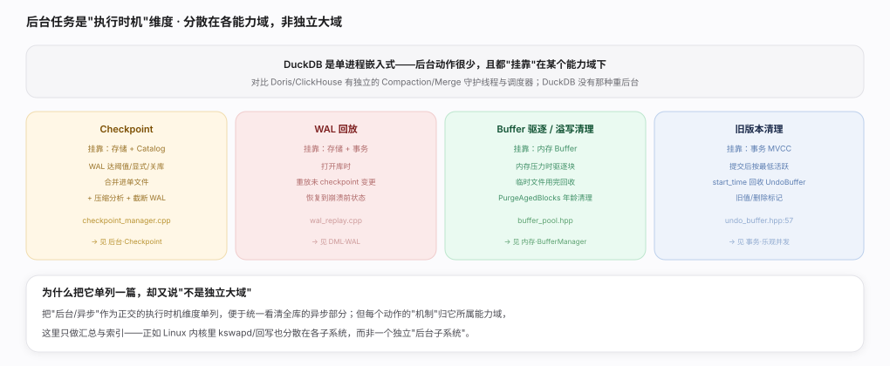
duckdb/src。checkpoint_wal_size：自动 checkpoint 阈值；批量导入可临时调大、结束后显式 CHECKPOINT。checkpoint_on_shutdown：关库是否 checkpoint（默认 true）；批处理短进程可权衡。memory_limit / temp_directory：影响 Buffer 驱逐与溢写清理的频率与落点。CHECKPOINT。| 后台动作 | 归属能力域 | 触发 | 锚点 |
|---|---|---|---|
| Checkpoint | 存储 + Catalog | WAL 超阈值/显式/关库 | storage/checkpoint_manager.cpp |
| WAL 回放 | 存储 + 事务 | 打开库 | storage/wal_replay.cpp |
| Buffer 驱逐 | 内存与 Buffer | 内存超 memory_limit | storage/buffer/buffer_pool.hpp |
| 临时文件回收 | 内存与 Buffer | 溢写数据用完 | storage/temporary_file_manager.hpp |
| 旧版本清理 | 事务与 MVCC | 提交后无人需要旧版本 | transaction/undo_buffer.hpp:57 |